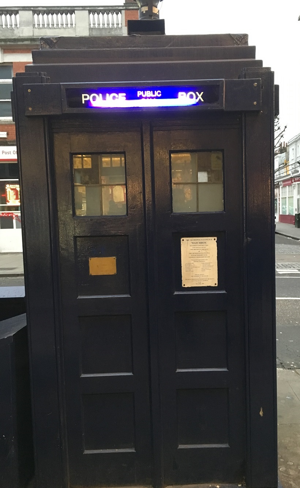
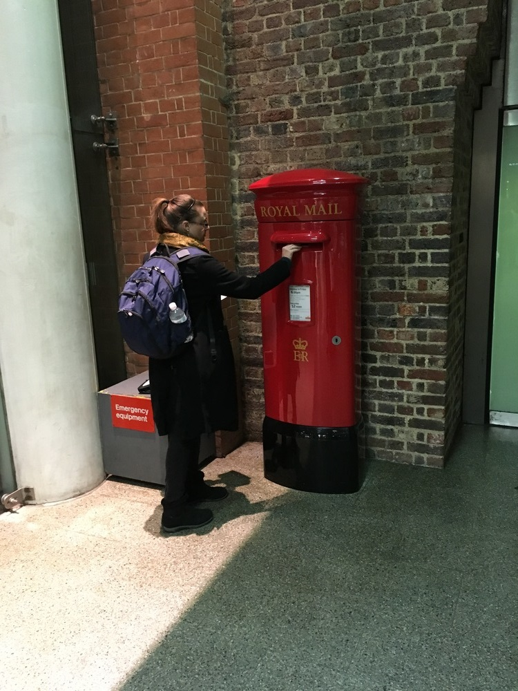
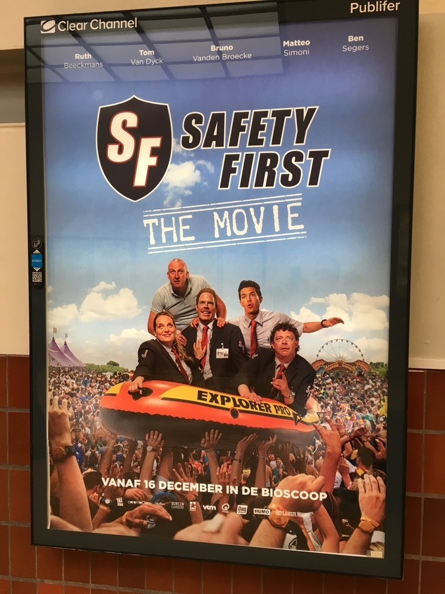
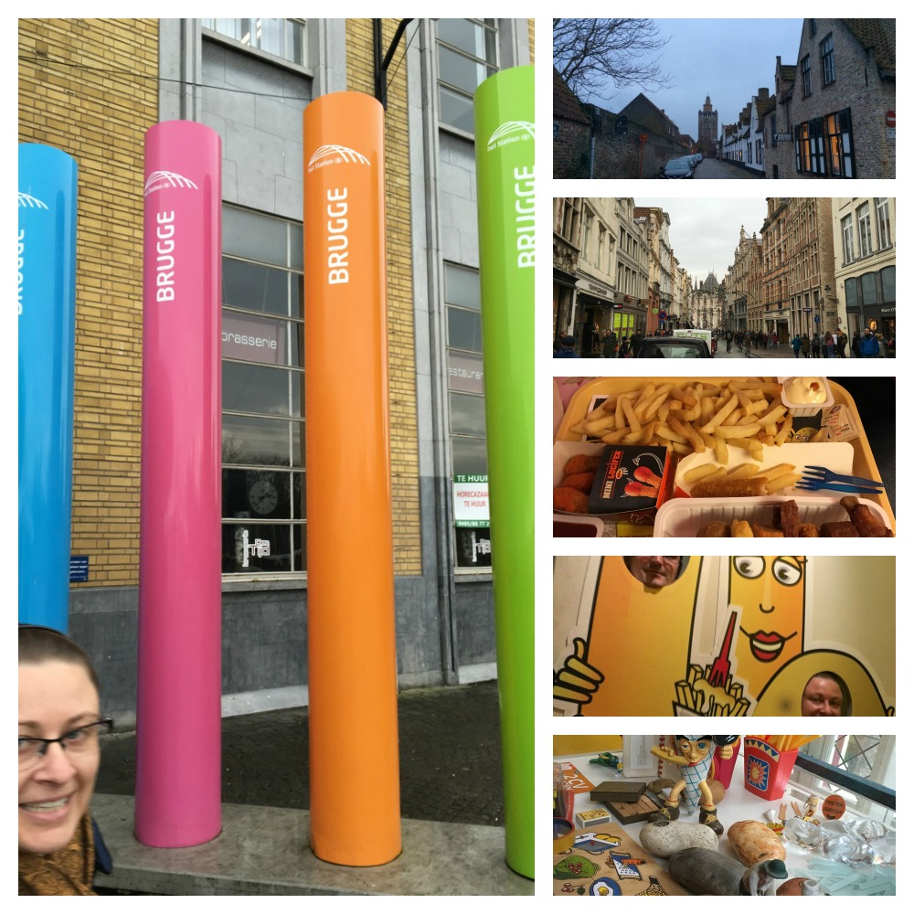
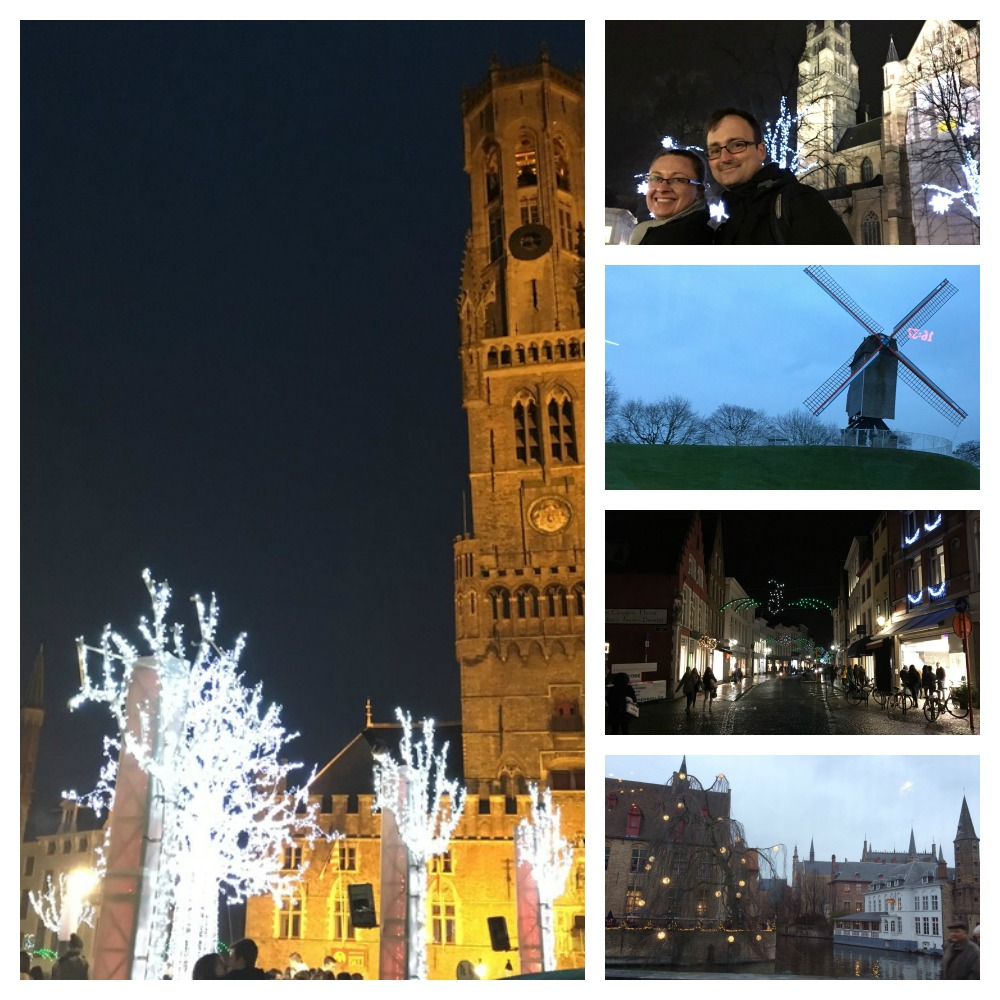

Day 8
Tuesday - 15 Dec 2015
By 0530 I was awake awake. Once again before the alarm again though as it turns out this ends up being a very good thing. I had purchased several postcards with stamps to send to the family. It was my one job to complete before falling asleep last night. One job. Yup. Fail. Bugger. I basically throw everything in my suitcase and scribble furiously while I wait for my turn in the bathroom.
Check out from the hotel goes quickly and quietly, of course, I was going to use the delay to complete some more postcards. Before I know it we are headed out and on our way to Earls Court Station with our luggage.
I'm standing on the road waiting to cross the road to the tube and BOOM! There it is. Sitting there. The whole time we have gone back and forth between the hotel and the station. How had I not noticed this before? And ... it's a real one. Not a prop. Supa cool!! Dickhead tourist mode engaged.
At 0645 our train to St Pancras station arrives and we hustle on with the two large suitcases and the two backpacks ... 4 wheels on a suitcase seems like a good idea ... until you want to take your hand off the handle while on a train rocking and shunting all over the place. *facepalm*. Yeah ... writing postcards on the train ride seems like such a practical use of the time. NOT. As the train doors open I finish the last postcard. Legible?? Probably not, however it is the thought that counts. Right?!? Next objective is to find a post box as luck would have it there is one right outside of the station. Obligatory photo with the English post box and the postcards are on their merry little way to Australia. The question of course is ... will we beat them home?!? Only time will tell.
A fairly straight forward process of going through customs and I'm surprised to be "greeted" by a French customs officer. I hadn't thought through the process very indepthly, clearly. Of course we were passing through France on our way to Belgium. Well, at least I got a little choo choo stamp in my passport. A good chunk of our travel wouldn't be physically recorded in the passport from now until we depart France. I think wistfully of all the great stamps that I won't be getting in my passport as we travel through the EU. I think thankfully of all the customs points I don't have to endure.
Next mission is to hunt and gather some breakfast. I fill in my journal while Lang wrangles some croissants. Nom nom nom. We boarded and settled in our seats on our way to Bruges. The 0805 Eurostar to Brussels is comfortable and has power points. WINNING! A short time later we immerge from the darkness of the tunnel into the open French countryside ... well ... after about 2 or 3 minutes of multiple rows of fences and barbed wire it opens into beautiful country side. The houses dotted along the train line are quite different from the houses we had seen in England. The roofs are far more angular and resemble an "A".
An hour and a time zone change later we arrive in Brussels for our interchange onto a local train to Bruges. Unfortunately our train was about 10 minute late and by the time we found out where we needed to go for the connection there wasn't enough time to make it. The next train was scheduled to depart in approx. 30 min so no real dramas there. It did give us an opportunity to go to the bathroom and grab a drink in a local pub across from the station. Though I felt like an arsehole with my big bag in the crowded room.
On our way to the platform for our Bruges connection there are movies advertised on the wall.
1300 Arriving in Bruges presented a number of changes. As we get off the train I could feel the temperature change. The weather is a couple of degrees colder and the air is crisper. As usual my child size bladder sends me to the bathroom. It is my first experience paying to use the bathroom. The facilities are aged but neat and tidy and fully stocked with paper and hand wash. What the 50 euro cents doesn't buy you is warm water or warm air when you dry your hands. :-S
Next mission is the walk to the hotel. The town is beautiful. The area is really really old and the parts that have been updated (bike lanes and pedestrian areas) have been done so in line with the old style. Almost the entire 15 minute walk is cobblestones in differing patterns. Which is wonderful to behold ... until you have to drag a rather large suitcase over them. They then get old ... quickly. *facepalm* We check in and the friendly concierge gives us some maps and tips on what to do. I'm disappointed to find that we actually have a twin room rather than a double. I absolutely hate that pushing two beds together is a standard form of getting a double bed. Yeah it's fine ... until they move apart and you fall down the friggin gap!!!! RAAAHHHHH. Did I mention I really don't like it? After a little tanty about the beds I realise that our bathroom is enormous and modern ... like half the size of the main room with heaps of bench space and a big combined bath shower. SWEET!
We quickly drop our gear set up the Wi-Fi on the phones and computers. Some research later and we have made some decisions on what to do for the rest of the day. We still haven't had lunch so our first stop is the Friet Museum (hot chip museum). Apparently chips were first invented in Belgium. Well, they take the credit for it anyway.
1430 and the hangry is exorcized with a platter of the Friet Museums best chips and other deep fried goodness (reminded me of any truckstop food in west Queensland not that I'm specifically thinking of Yuleba buuuut it would be a perfect example).
By the time we exit the museum an hour later I know more about the humble potato than I ever imagined. Next we are off to inspect the local Christmas markets. A pair of touchscreen gloves, magnets and a Bruges shirt later we jump on the 1600 50 minute city tour. Worth every cent. The purpose-made little bus with a glass roof meandered its way through the town with accompanying commentary. Churches, bridges, canals and convents are some of the topics.
To sooth our history bulging heads we indulge in some local hot chocolate drinks and a Nutella waffle ... OMG! Delicious!! Unfortunately the hot food and drink is accompanied with the beginning of drizzle. We pop our hoodies and continue to explore the town heading to the next marketplace and set of Christmas markets.
The early morning, drizzle and closing of the shops soon puts a dampener on our spirit to be out in the weather and by 2200 we are in bed and out for the count.
***Pretty and practical rarely line up***